101 — Your first reflexive thematic analysis
In this tutorial you will take three fictional interviews and a short survey about working night shifts from import all the way to an exported manuscript, passing through all six phases of reflexive thematic analysis. Learning why the app works the way it does matters as much as learning which button to press.
0Before you start5 min
What you need
- A computer with a recent browser (Chrome, Edge, Firefox or Safari)
- The practice data: practice-data-en.zip (four files once unzipped)
interview_P01.txt,interview_P02.txt,interview_P03.txt— interviews with three people who work nights in a hospital or a care homesurvey.csv— a survey of ten people (age group, role, shift pattern and two free-text questions)
Every person, workplace and answer is invented. The offline .zip contains the same files under samples/tutorial/en/.
- Coding is interpretation. There is no correct set of codes, and your perspective is a resource for the analysis, not a bias to remove.
- Themes are generated by you, not found in the data. A theme is a pattern of shared meaning organised around a central concept, not a summary of a topic.
- The six phases are recursive. Going back to coding while you review themes is normal.
Most of the app's design choices (hidden counts, no agreement statistics, a journal everywhere) follow from these three ideas.
1Open the app and set up a project3 min
You can use the app straight away with Open the app. Without an internet connection, unzip the offline version from the releases page and double-click ta_canvas.html.
Your data is stored in the browser, separately for each place the app is opened from. A project made in the online version does not appear in the offline version (and vice versa). Pick one, and use Backup and Restore to move a project.
- The first time you open the app, Project setup appears.
- Enter “Experiences of working night shifts” as the Project name and “How do people who work night shifts in hospitals and care homes experience working at night?” as the Research question, then Save.
- Type your initials in the Researcher box at the top. From now on, your actions and journal entries are recorded under this name.
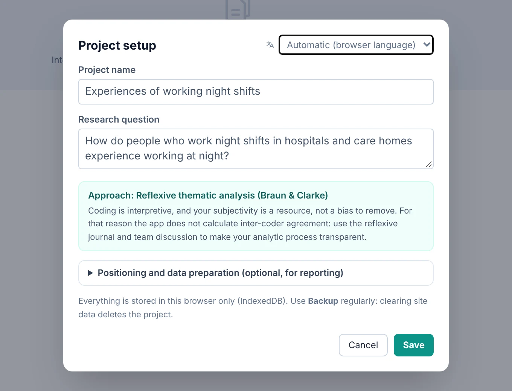
2Import the data5 min
Each file is converted once into fixed plain text. Codes point at character positions in that text, so the text never changes after import.
- Click Import (top left) and choose the three interviews (
.txt). Dropping files onto the window works too. - Then import
survey.csv. A column dialog opens: check that Participant ID is “ID”, that Code this text is ticked for the two free-text questions and Attribute for age group, role and shift pattern, then click Import. - Open
interview_P01.txtand click Detect speakers, then confirm. Lines starting with “I:” are tagged as the interviewer, lines starting with “P01:” as P01. Do the same for P02 and P03. - In the Participants list on the left, hover over P01 and click the pencil to add attributes, one per line:
Age group: 40s,Role: Nurse,Shift pattern: Two-shift. P02 is 30s, Care worker, Lone night; P03 is 20s, Nurse, Two-shift.
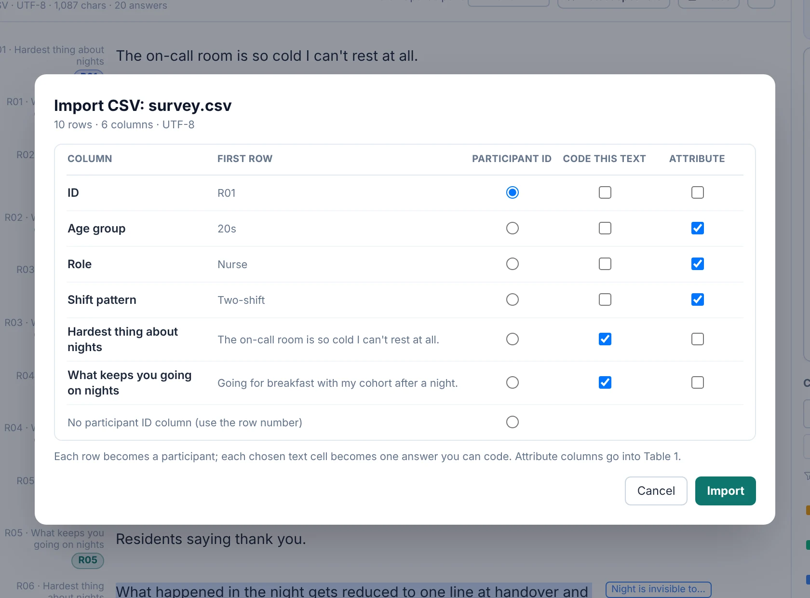
Who said something is a fact, not an interpretation, so speakers form their own layer under the codes. Interviewers (I, Q, Interviewer, Moderator …) are recognised automatically and are not counted as participants. For a one-to-one interview, choosing a Default participant for the document is enough.
3Phase 1: Familiarising5 min
Tab 1 · Familiarise & CodeBefore coding anything, read the whole dataset. Read it more than once, and note what you notice, what puzzles you and how you yourself react.
- Read the three interviews and the survey from start to finish without coding.
- Click Notes above the document and write first impressions, for example: “‘The last line of defence’ stays with me. She talks about heavy responsibility in a very matter-of-fact way.”
- Press Ctrl+J (⌘+J on a Mac) to open the reflexive journal, choose Positionality, and write how you stand in relation to the topic. For example: “I worked nights myself, so I need to watch that I do not read every account as ‘nights are hard’.”
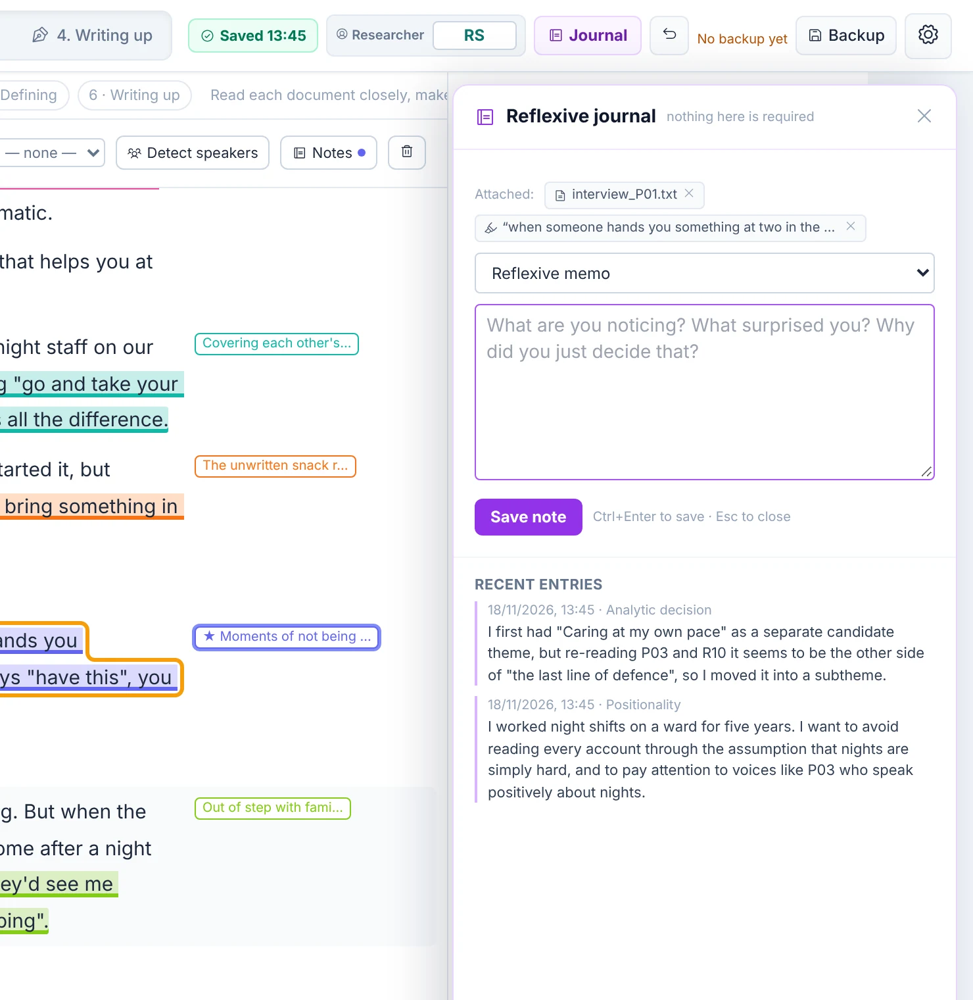
4Phase 2: Coding10 min
Tab 1 · Familiarise & CodeCode the whole dataset systematically. Codes are analytic tools that capture meanings relevant to your question. Renaming, merging and splitting them along the way is part of the process.
The basics
- In P01, select “At night I'm the last line of defence”.
- Just start typing “The first call is ours” and press Enter. A new code is created and applied to the selection.
- Select the same words again and click In-vivo code on the right. This creates a code named with the participant's exact words. Use in-vivo codes when you want to keep their language.
- In P02, select “If two call bells go off at once, you have to decide which one to go to first.” and click “The first call is ours” in the code list. Existing codes are applied with one click.
- Dragging a code onto a line codes that whole line (or survey answer).
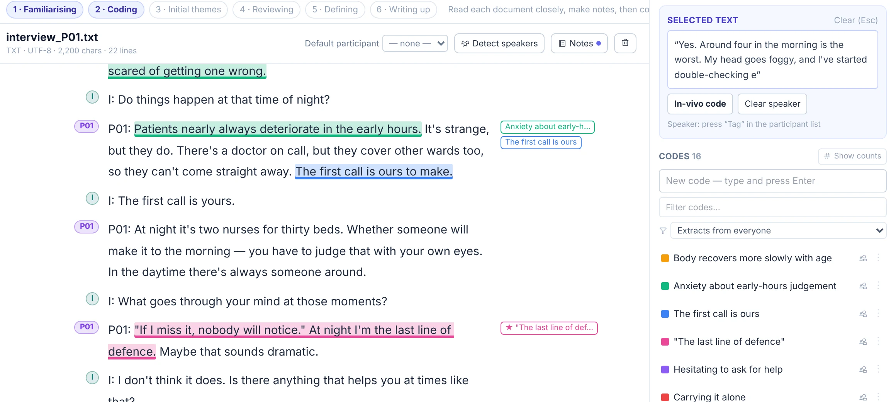
Open an extract: key mark, memo, range
Click any highlighted passage to open that coded extract on the right. Where extracts overlap, each click moves to the next one.
- ★ Key extract: mark the extracts you may quote. They are used first in the table of themes and extracts.
- Analytic memo: write what you think about this extract.
- Add another code: one extract can carry several codes, and extracts may overlap.
- Change the range: with the extract open, select new text and click Use as the range of the open extract, or widen it with Whole line. Its codes, memo and key mark stay.
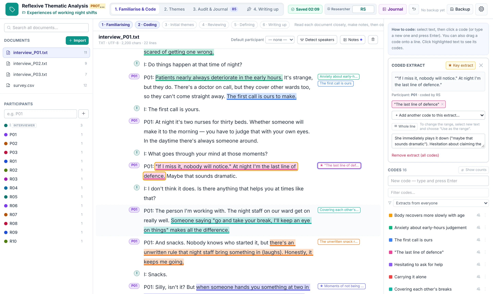
Search the whole dataset
- Type “own” in the search box at the top left (Ctrl+F).
- Every match in every document is listed with its context. Click one to jump to it; Enter and Shift+Enter step forwards and back.
- “On your own”, “with your own eyes”, “at my own pace”: the same word can carry very different meanings — being alone, and having latitude.
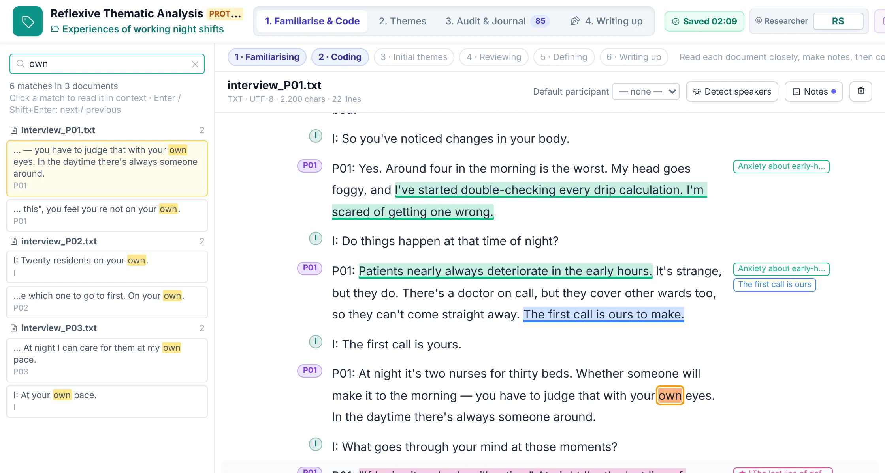
Coding every hit mechanically would turn coding into counting words. Use search as a way back into reading the whole dataset.
Tidy codes: rename, merge, split
As you code, you will want to merge similar codes, or notice that one code holds two different ideas. Open a code's editor with ⋮.
- Change its name, description and colour.
- Merge: choose another code and save; every extract moves to that code.
- Split…: tick the extracts that capture a different idea and name the code they should carry. Only those extracts move.
- Anything you write under Why? (optional) is kept in the audit trail as the reason for the decision.
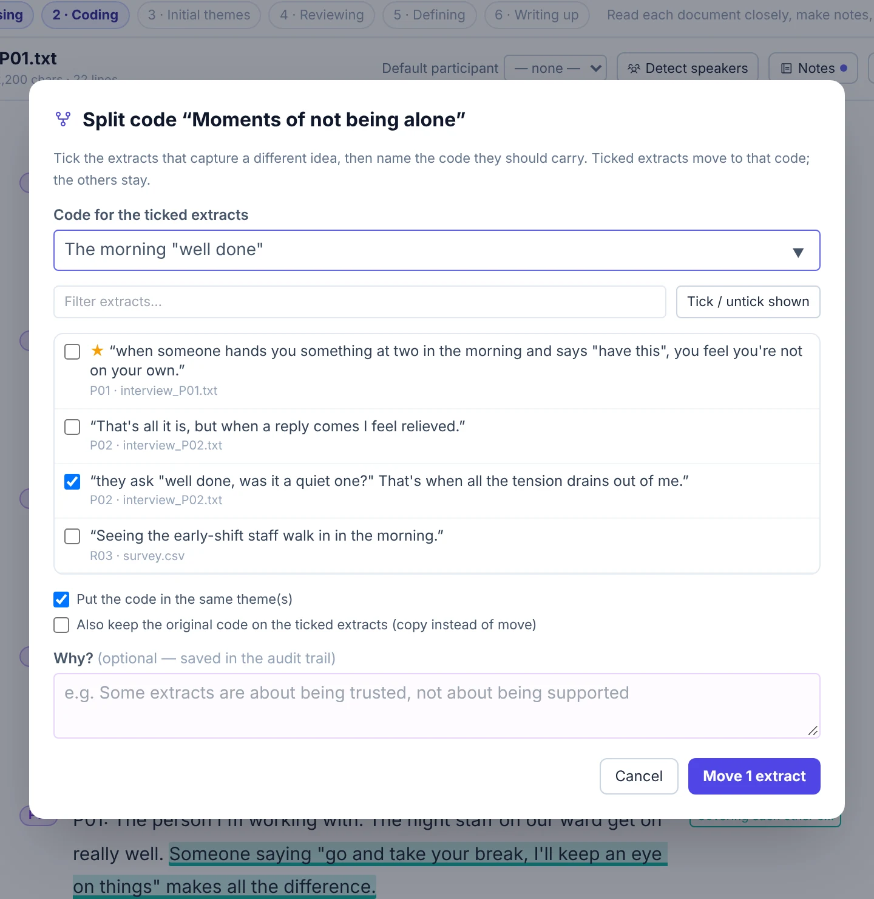
The number of extracts and participants per code or theme is hidden by default. Numbers that are always on screen nudge you to read “more” as “more important”. Use Show counts when you really need them.
Carry on coding the rest of the data. If you are short of time, move on once you have about fifteen codes.
5Phase 3: Generating initial themes5 min
Tab 2 · ThemesLook across your codes and gather those that share a central organising concept into candidate themes.
- Open the 2. Themes tab. The code pool is on the left.
- Type “Responsibility at night” into New candidate theme… and click Theme.
- Drag codes such as “The first call is ours”, “Hesitating to ask for help” and “Carrying it alone” onto the theme card.
- In the same way, make a second theme from codes about colleagues looking after each other, and a third from codes about family and daily rhythms.
- Click a code in the pool to re-read its extracts. A code can sit in more than one theme.
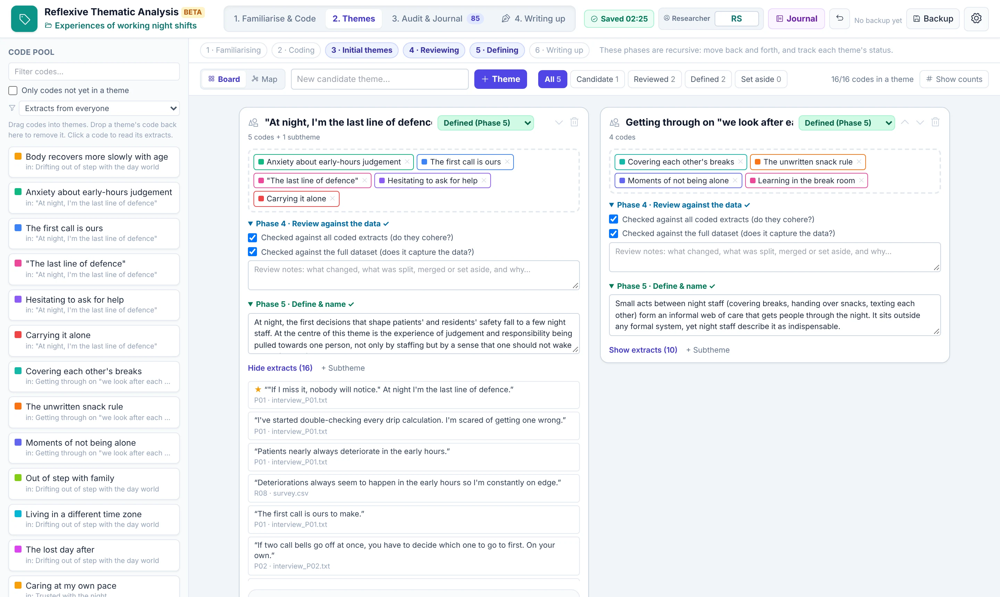
Every theme has a status: Candidate (phase 3) → Reviewed (phase 4) → Defined (phase 5), or Set aside. One theme can be defined while another is still a candidate.
6Phase 4: Reviewing themes5 min
Tab 2 · ThemesCheck each candidate theme against the data at two levels: do its coded extracts cohere, and does it capture something meaningful across the whole dataset?
- On “Responsibility at night”, click Show extracts and read them through. If they cohere, tick Checked against all coded extracts.
- Above the code pool, change Extracts from everyone to “Role: Care worker”. Only care workers' extracts remain, and the weight of the lone night in a care home comes into view, unlike the hospital nurses' accounts.
- Back in tab 1, search for “prefer”. P03 says she prefers nights: responsibility is a burden, but also a feeling of being trusted.
- Build that into the theme, for example by adding a + Subtheme “Trusted with the night” and moving the relevant codes into it. Write what you changed and why in the review notes.
- Set the theme's status to Reviewed. A small box appears at the bottom where you can say why (it disappears by itself if you don't).
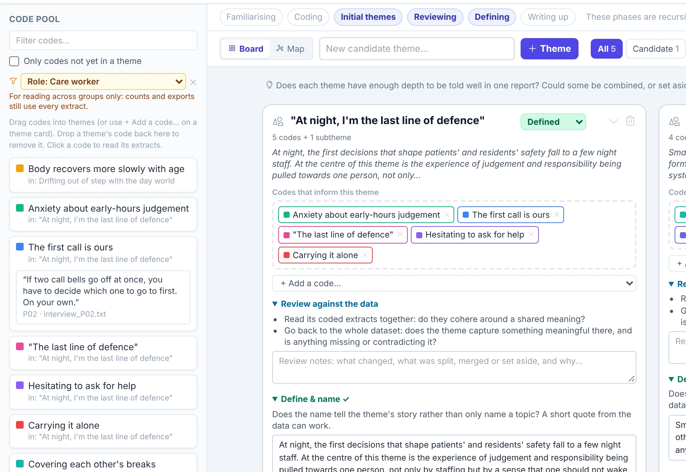
The filter lets you read how a code is expressed in different groups. Counts and exports are unchanged: presenting group differences as numbers of extracts would move away from reflexive TA.
An account that does not fit (here, P03) is neither a reason to drop the theme nor an exception to ignore. It helps you rethink the theme's boundaries and depth.
7Phase 5: Defining and naming themes5 min
Tab 2 · ThemesFor each theme, write its central organising concept, its scope and boundaries and how it relates to the other themes, and give it a name that tells its story.
- On “Responsibility at night”, open Phase 5 · Define & name and write a definition. For example: “At night, the first decisions that shape safety fall to a few night staff. At the centre of this theme is the experience of judgement and responsibility being pulled towards one person.”
- Rename the theme from a topic label to a name that tells the story: “Responsibility at night” → ‘“At night, I'm the last line of defence”’. A participant's words can work well.
- Set its status to Defined (without a definition, the app asks you to write one first).
- Switch to Map. Drag the themes into place. Click Link themes, then two themes in turn; click the line to name the relationship (for example, “made bearable by”).
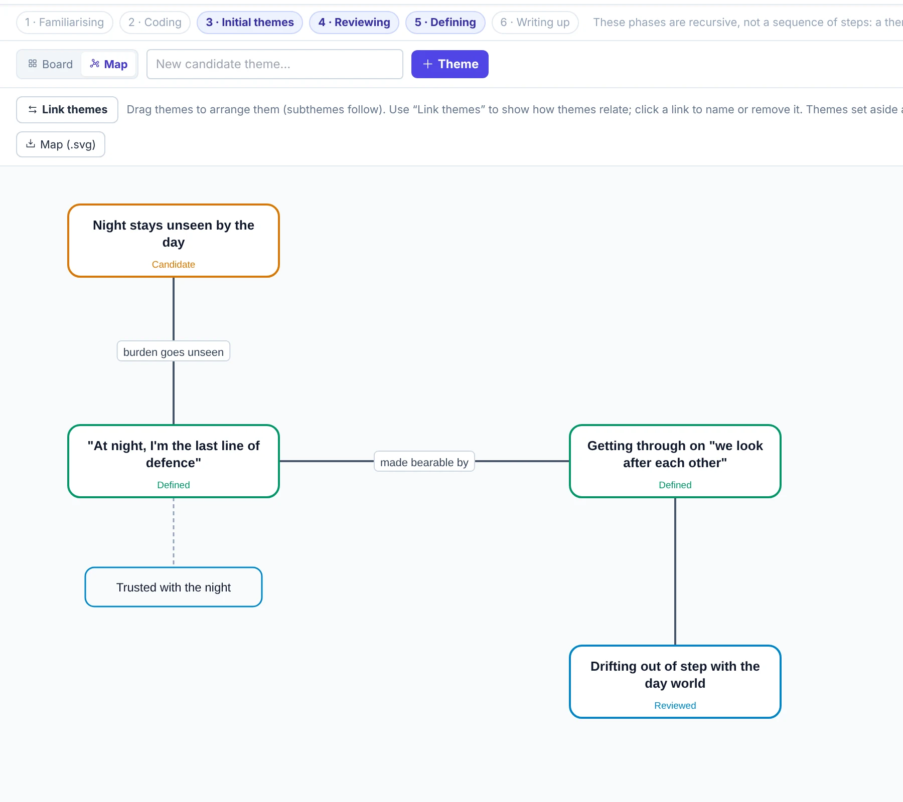
When a reviewed or defined theme has a short, topic-like name, the card shows a small hint. So does a board with more than eight themes, or a theme with four or more subthemes. Hints never block anything: whether to follow them is your call.
8Phase 6: Writing up5 min
Tab 4 · Writing upPhase 6 is writing, not tabulating. Because writing is part of the analysis, this tab opens on the analytic narrative, not on tables.
- Open the 4. Writing up tab.
- Under Overview of the analysis, write two or three sentences on the story your themes tell together, in relation to your research question.
- Write the narrative for each theme. Open Extracts to draw on and click Insert to put an extract at the cursor.
- Finally, under General discussion: conclusions across themes, write the “so what” of the analysis as a whole.
- Click Write-up & tables (.docx) on the left to get the narrative, the map, the tables and the appendix as one Word file.
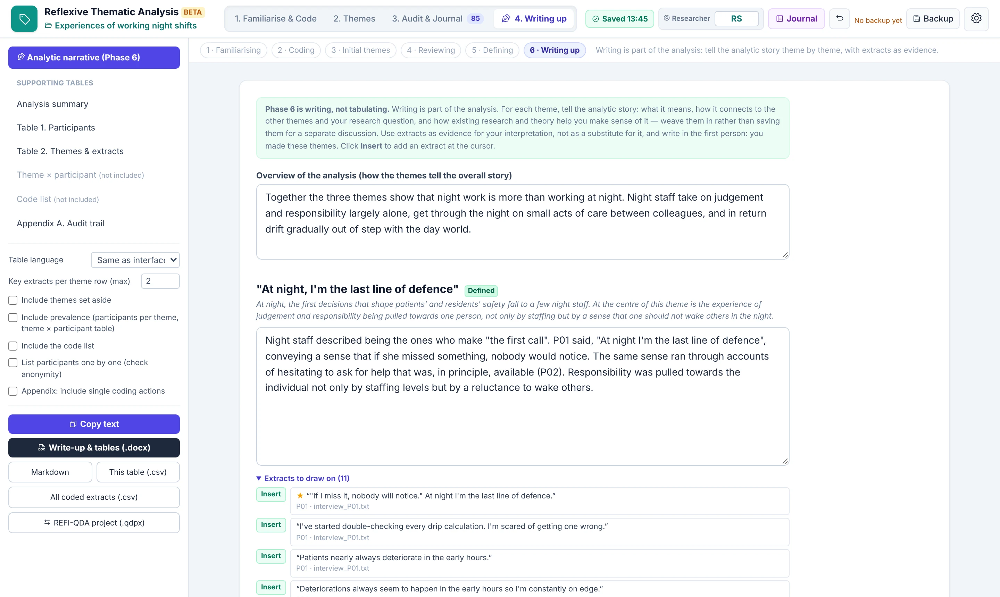
Prevalence (participants per theme, the theme × participant table) and the code list are not exported unless you tick them. Participant characteristics are summarised for the group rather than listed per person, to protect anonymity. All of these can be switched on, but think about whether you need them first.
9Look back at the record, and back up3 min
Tab 3 · Audit & JournalEverything you did has been recorded automatically.
- Open the 3. Audit & Journal tab. Codes created, merged and split, theme status changes, your reasons and your journal entries are listed in time order.
- Click Structure then on a journal entry to see the theme structure at that moment, and what has changed since.
- Click Backup at the top to save the whole project as a
.jsonfile. “Last backup: just now” appears next to it.
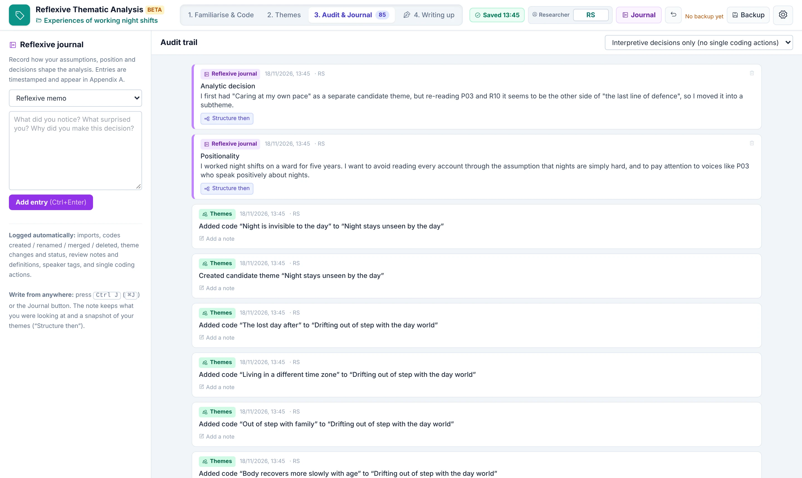
Your data exists only in the browser. Clearing the browser's site data deletes the project. The backup file contains the full text of your documents, so store it as carefully as your raw data. To bring a backup back, use Restore backup under the gear menu.
✓Wrap-up
Well done. In this tutorial you have:
- imported transcripts and a survey, and set up speakers and attributes
- familiarised yourself with the data, with notes and a journal entry
- coded, re-read the data through search, and merged and split codes
- generated candidate themes and reviewed them against the extracts and the dataset
- defined themes, named them so they tell a story, and drawn a thematic map
- written the analytic narrative and exported it to Word
- checked the audit trail and made a backup
When you are done practising, New / Reset under the gear menu gives you an empty project (back up first if you want to look at it again).
Read next
- Guide — every feature, keyboard shortcuts, storage, working with others, FAQ
- RTARG mapping — how the app relates to each item of the Reflexive Thematic Analysis Reporting Guidelines
References
- Braun, V., & Clarke, V. (2006). Using thematic analysis in psychology. Qualitative Research in Psychology, 3(2), 77–101.
- Braun, V., & Clarke, V. (2019). Reflecting on reflexive thematic analysis. Qualitative Research in Sport, Exercise and Health, 11(4), 589–597.
- Braun, V., & Clarke, V. (2022). Thematic analysis: A practical guide. SAGE.
- Braun, V., & Clarke, V. (2024). Supporting best practice in reflexive thematic analysis reporting in Palliative Medicine: A review of published research and introduction to the Reflexive Thematic Analysis Reporting Guidelines (RTARG). Palliative Medicine, 38(6), 608–616.